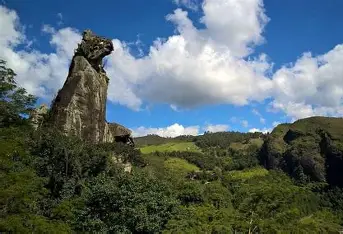
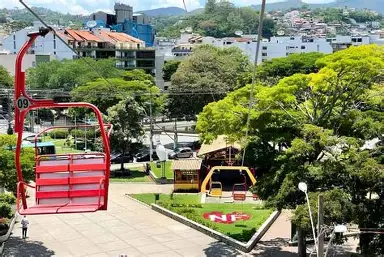

Lumiar é um dos destinos turísticos mais conhecidos de Nova Friburgo. Localizado na Região Serrana do Rio de Janeiro, o distrito encanta visitantes por suas paisagens montanhosas, rios de águas cristalinas, cachoeiras e pelo clima agradável durante todo o ano. O local preserva um ambiente tranquilo, cercado pela Mata Atlântica, sendo muito procurado por quem busca contato com a natureza, ecoturismo e momentos de descanso. Entre seus principais atrativos estão o lago central, as trilhas ecológicas e diversas cachoeiras, como o famoso Poço Feio.
Pedra do Cão Sentado é o principal símbolo natural de Nova Friburgo. Trata-se de uma formação rochosa que lembra a silhueta de um cão sentado observando a paisagem. Localizada no Parque Ecológico Cão Sentado, a atração é cercada por trilhas, grutas, cavernas e áreas de mata preservada. A pedra possui cerca de 111 metros de altura e se tornou um dos cartões-postais mais famosos da cidade, representando a riqueza geológica e a beleza natural da região.

Teleférico de Nova Friburgo é uma das atrações mais tradicionais da cidade. Inaugurado em 1975, ele liga a Praça do Suspiro ao Morro da Cruz, proporcionando uma vista panorâmica das montanhas e do centro urbano. O passeio é realizado em cadeirinhas suspensas e possui estações intermediárias com áreas de lazer e mirantes. Do alto, os visitantes podem admirar a beleza natural da região serrana e registrar belas fotografias da cidade.
